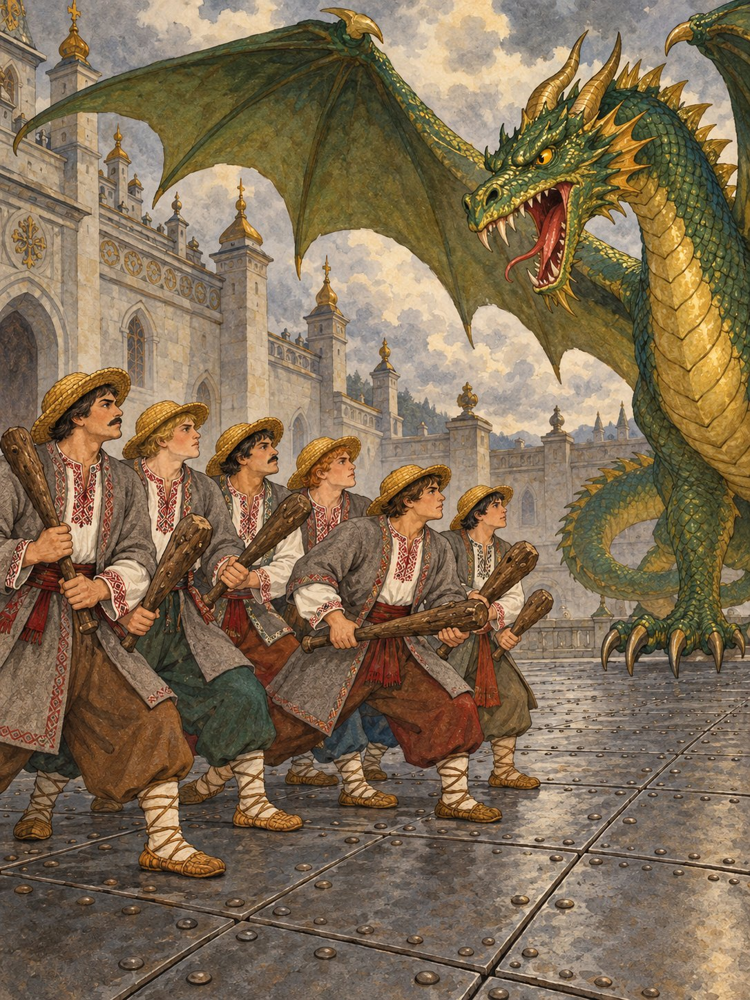

Брати йшли зміїною борозною, аж поки вона не привела їх до палацу. Змій уже чекав на них на подвір’ї.
— Віддай нашу сестру! — гукнули брати.
— Віддам, якщо переможете мене, — засміявся Змій. — Ходімо битися на залізний тік.
Брати хоробро стали до бою, та Змій був сильніший. Одного за одним він повалив їх і кинув у глибоке темне підземелля під палацом.
